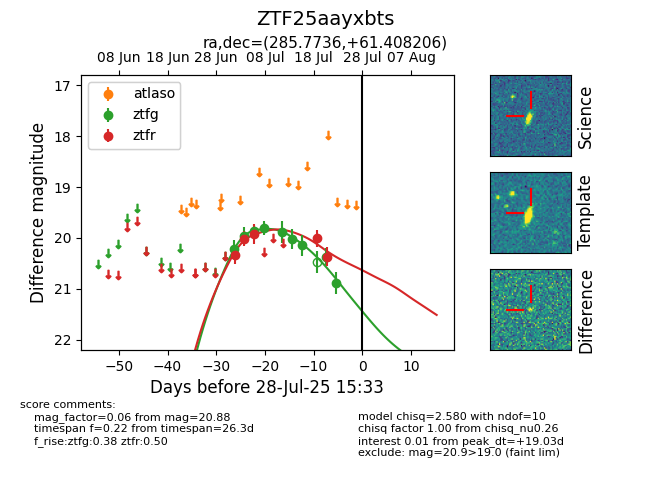

Target ZTF25aayxbts at 2025-07-28 15:33, see:
FINK: fink-portal.org/ZTF25aayxbts
Lasair: lasair-ztf.lsst.ac.uk/objects/ZTF25aayxbts
ALeRCE: alerce.online/object/ZTF25aayxbts
alt names
ZTF25aayxbts (ztf,fink)
coordinates:
equatorial (ra, dec) = (285.7736,+61.40821)
galactic (l, b) = (91.8398,+22.25468)
photometry
last ztfg=20.88, ztfr=20.37
9 ztfg, 5 ztfr detections
